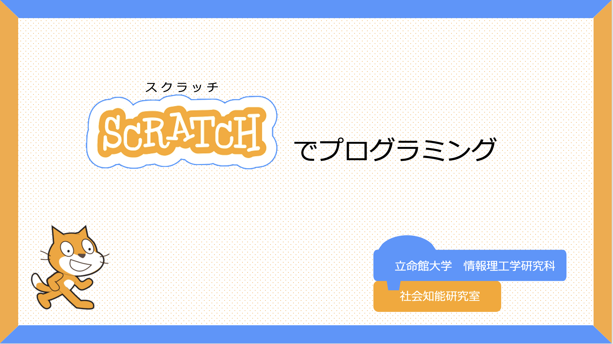

Ikueinishi Junior High School Programming Workshop
Date: Wednesday, July 22, 2026
Venue: Ritsumeikan University, Osaka Ibaraki Campus

For 1st Year Students
Programming with Scratch
Let’s make a nail-themed game using “Scratch”!
Template download: here